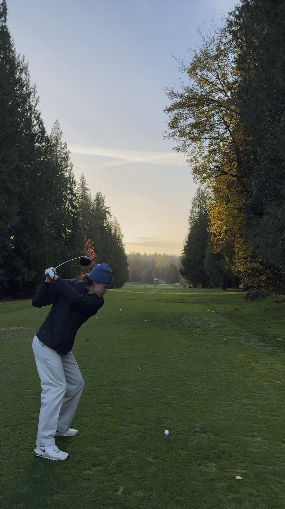
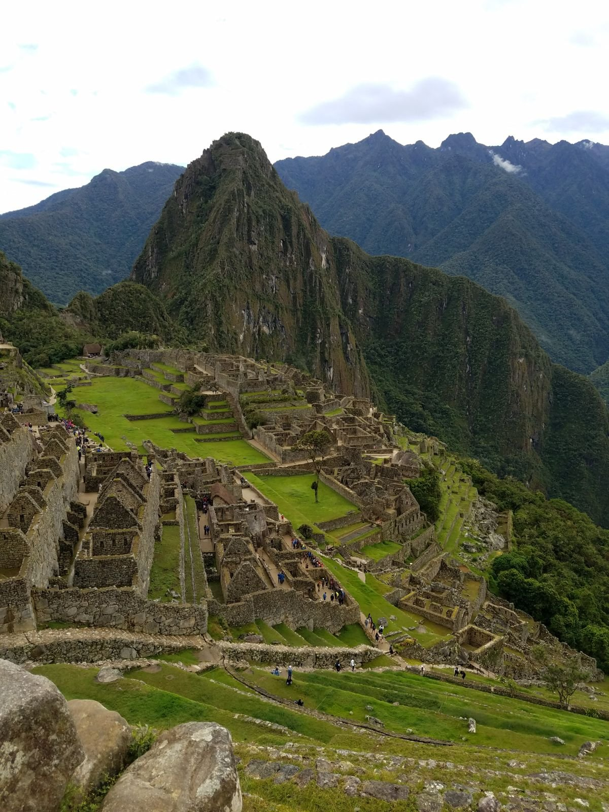
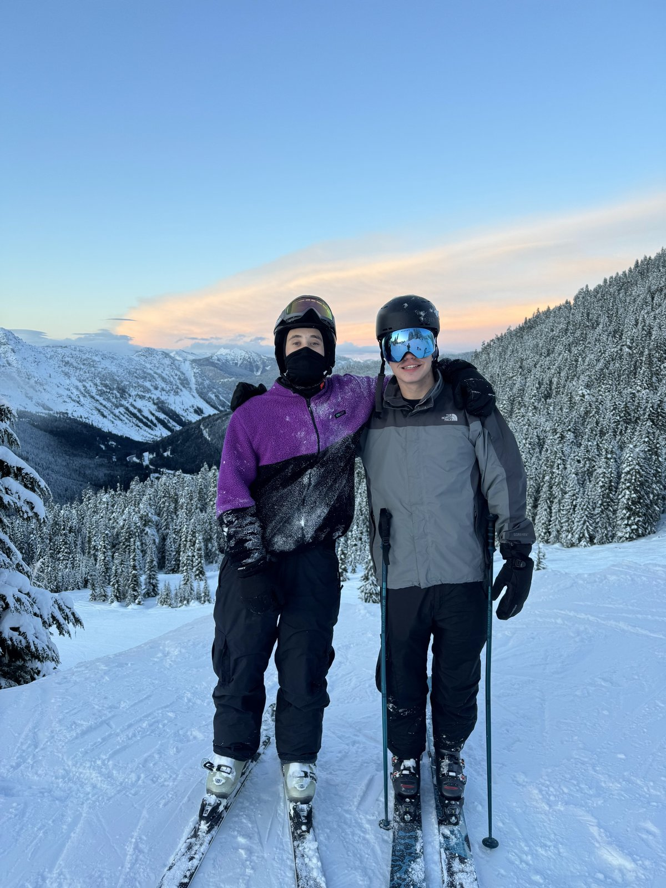

Beyond the Resume
A resume can only say so much about a person. Outside of school and work, I try to spend as much time as I can outdoors and exploring new places. My three favorite ways to do that are golfing, traveling, and skiing. Each one has taught me something that carries over into my studies and my career.



Golf
Golf is my favorite way to spend a free afternoon. It is a game that rewards patience, focus, and steady improvement, and it is humbling in the best way. No two rounds are ever the same, so I am always working on something new, whether that is my short game or simply staying positive after a tough hole. Golf is also a great way to connect with friends, family, and new people, which is one reason it is so popular in the business world.
Travel
Traveling gives me the chance to experience new cultures, foods, and ways of life. I enjoy planning trips almost as much as taking them, from mapping out the route to finding the best local spots to eat. Every trip teaches me something, and seeing how businesses operate in different places has made me even more curious about how organizations serve their customers.
Skiing
In the winter, I head to the mountains whenever I get the chance. Skiing is the perfect mix of challenge and fun, and there is nothing quite like the first run on a clear, fresh morning. It has taught me to push past my comfort zone, try harder terrain one step at a time, and enjoy the progress along the way.
What Ties It All Together
Whether I am lining up a putt, navigating a new city, or picking a line down a mountain, I enjoy setting goals, learning from mistakes, and steadily getting better. That same mindset guides my approach to school and work, and it is what I look forward to bringing to my future career.